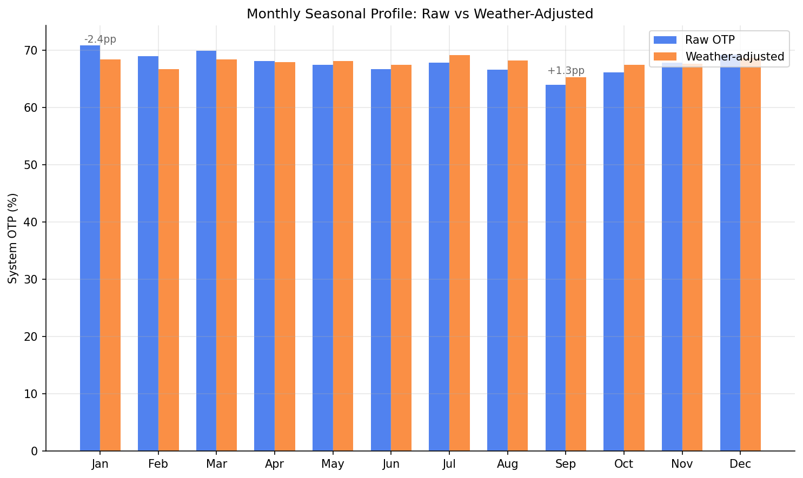
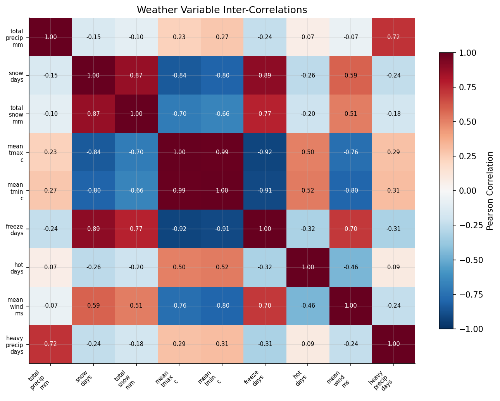
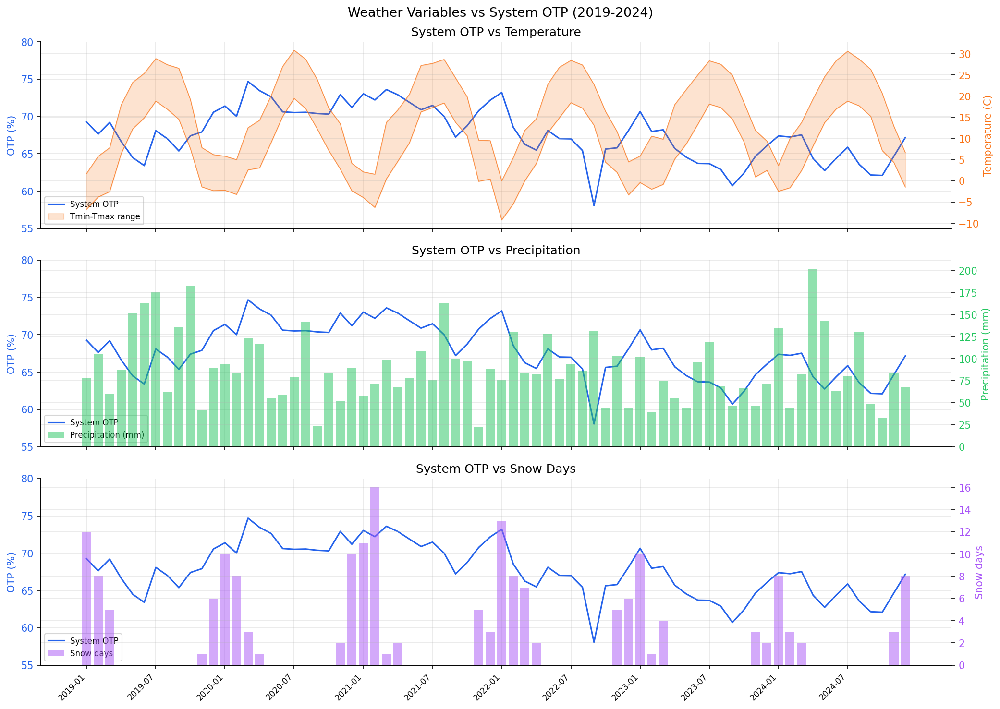
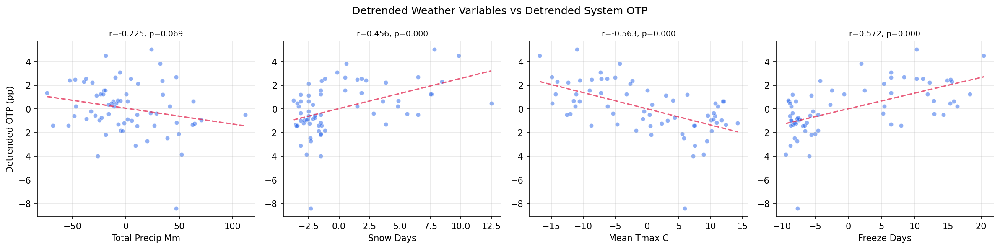

Analysis
28 - Weather Impact
Ridership and External Factors
Coverage: 2019-01 to 2025-12 (from otp_monthly, weather_monthly).
Built 2026-03-03 02:14 UTC · Commit 1d82e84
Page Navigation
Analysis Navigation
Data Provenance
flowchart LR 28_weather_impact["28 - Weather Impact"] t_otp_monthly["otp_monthly"] --> 28_weather_impact 01_data_ingestion["Data Ingestion"] --> t_otp_monthly t_route_stops["route_stops"] --> 28_weather_impact 01_data_ingestion["Data Ingestion"] --> t_route_stops t_routes["routes"] --> 28_weather_impact 01_data_ingestion["Data Ingestion"] --> t_routes t_weather_monthly["weather_monthly"] --> 28_weather_impact 03_weather["Weather ETL"] --> t_weather_monthly d1_28_weather_impact["numpy (lib)"] --> 28_weather_impact d2_28_weather_impact["polars (lib)"] --> 28_weather_impact d3_28_weather_impact["scipy (lib)"] --> 28_weather_impact classDef page fill:#dbeafe,stroke:#1d4ed8,color:#1e3a8a,stroke-width:2px; classDef table fill:#ecfeff,stroke:#0e7490,color:#164e63; classDef dep fill:#fff7ed,stroke:#c2410c,color:#7c2d12,stroke-dasharray: 4 2; classDef file fill:#eef2ff,stroke:#6366f1,color:#3730a3; classDef api fill:#f0fdf4,stroke:#16a34a,color:#14532d; classDef pipeline fill:#f5f3ff,stroke:#7c3aed,color:#4c1d95; class 28_weather_impact page; class t_otp_monthly,t_route_stops,t_routes,t_weather_monthly table; class d1_28_weather_impact,d2_28_weather_impact,d3_28_weather_impact dep; class 01_data_ingestion,03_weather pipeline;
Findings
Findings: Weather Impact on OTP
Summary
Weather variables show moderate raw correlations with system OTP (freeze_days r=+0.44, mean_tmin r=-0.40, snow_days r=+0.40) that strengthen after detrending (freeze_days r=+0.57, mean_tmin r=-0.57), but these correlations are counterintuitive -- colder, snowier months have better OTP. Weather jointly adds 15pp of R2 beyond a linear trend (F=3.44, p=0.008) but does not significantly improve on month dummies (F=0.92, p=0.48). The seasonal pattern from Analysis 06 is partially explained by weather -- weather adjustment flattens the winter peak by ~2.4pp and lifts the September trough by ~1.3pp -- but month dummies add no significant additional explanatory power beyond weather either (F=1.09, p=0.39). At the route-month level with cluster-robust standard errors, no weather variable is significant (all p>0.12), indicating weather effects are too small relative to route-level noise to detect in the panel.
Key Numbers
- Detrended correlations (n=66 months): freeze_days r=+0.57, mean_tmin r=-0.57, mean_wind r=+0.55, snow_days r=+0.46, mean_tmax r=-0.56 (all p<0.001)
- Weather + trend regression (n=72): R2=0.43, vs trend-only R2=0.28, weather adds +15pp (F=3.44, p=0.008)
- Month-only model: R2=0.50; Weather-only model: R2=0.43; Combined: R2=0.54
- F-test (weather added to months): F=0.92, p=0.48 -- weather does NOT improve on month dummies
- F-test (months added to weather): F=1.09, p=0.39 -- months do NOT improve on weather either
- Route-level panel (n=6,672, 72 clusters): R2=0.045; no variable significant with cluster-robust SEs
- Seasonal adjustment: January raw 70.8% -> adjusted 68.4% (-2.4pp); September raw 64.0% -> adjusted 65.3% (+1.3pp)
- Only 1 of 11 month dummies significant in combined model (September, p=0.039)
Observations
- The raw correlations confirm Analysis 06's finding: winter months have better OTP. This is not despite the weather -- it is correlated with cold weather features (freeze days, snow days, low temperatures, high wind).
- After detrending, correlations strengthen substantially (freeze_days: 0.44 -> 0.57), indicating the seasonal weather-OTP relationship is not an artifact of shared secular trends.
- Temperature variables show the strongest detrended correlations (mean_tmin r=-0.57, mean_tmax r=-0.56), meaning warmer months systematically have worse OTP.
- Precipitation (total_precip) has a weak negative correlation (r=-0.23 detrended, p=0.07) -- wetter months have slightly worse OTP, but this is the expected direction and not statistically significant.
- In the combined model, weather and month dummies are collinear enough that neither adds significantly to the other. Both capture the same seasonal signal through different variables.
- Weather adjustment partially flattens the seasonal profile: it reduces the January peak by 2.4pp and lifts September by 1.3pp, narrowing the best-to-worst spread from 6.8pp to 3.8pp.
- The panel regression (Block C) shows weather effects are tiny at the route level (R2=4.5%), and cluster-robust SEs (acknowledging that weather is constant within months) eliminate all significance.
Discussion
The key finding is that weather and seasonality are statistically interchangeable at the system level -- they capture overlapping variance, and neither adds significantly beyond the other. This means the Analysis 06 seasonal pattern can be described as a weather pattern (cold months = better OTP) but we cannot determine whether weather causes the pattern or merely co-occurs with other seasonal factors (school schedules, construction seasons, ridership patterns).
The counterintuitive direction (cold = better OTP) suggests the mechanism is not weather-as-impediment but rather seasonal demand and operational patterns: winter reduces ridership and road congestion, improving schedule adherence despite worse driving conditions. Snow and cold are proxies for lower demand, not direct causes of better performance.
The panel regression null result is important: even though system-level correlations are strong (r>0.5), weather variation explains only 4.5% of route-month OTP variation, and this disappears with proper clustering. This indicates weather is a system-level seasonal modulator rather than a route-level predictor -- all routes respond similarly to weather, so it provides no discriminating power for individual route performance.
Caveats
- n=72 months is small for a 17-parameter model (Block B combined). The F-tests have limited power to distinguish between month dummies and weather variables.
- Weather station ~20km from downtown: Pittsburgh Airport weather may not perfectly represent conditions on specific bus routes, though monthly aggregation minimizes this concern.
- AWND (wind speed) has 5 missing daily values (0.2%), unlikely to affect monthly aggregates.
- Collinearity between weather and month-of-year is inherent -- weather is seasonal. The F-tests correctly diagnose this overlap but cannot resolve causality.
- No extreme-event analysis: daily weather extremes (ice storms, heat waves) may have strong route-level effects that are averaged away in monthly aggregation.
- Counterintuitive cold = better OTP may reflect omitted variables (construction, school, ridership) rather than a direct cold-weather benefit.
Output

monthly seasonal profile: actual vs weather-adjusted.

heatmap of weather variable inter-correlations.

weather time series overlaid with system OTP (dual-axis).

scatter matrix of key weather variables vs detrended system OTP.
No interactive outputs declared.
regression results for all models.
Preview CSV
correlation matrix of weather variables vs system OTP.
Preview CSV
Methods
Methods: Weather Impact on OTP
Question
Does weather (precipitation, snow, temperature) explain OTP variance or the counterintuitive seasonal pattern found in Analysis 06 (winter months outperform fall)?
Approach
Three analysis blocks test weather's explanatory power at different levels:
Block A -- System-level weather-OTP correlation:
- Join
weather_monthlyto system-wide monthly OTP (trip-weighted from balanced panel of routes). - Compute Pearson and Spearman correlations for each weather variable vs system OTP.
- Detrend both series (subtract 12-month rolling mean) to remove shared secular trends, then re-test.
- Fit a multiple regression: system OTP ~ weather variables (controlling for linear trend).
Block B -- Seasonal decomposition test:
- Replicate Analysis 06's monthly seasonal profile (month-of-year deviations from trend).
- Add weather controls: does the September trough disappear after adding weather? Does the January peak?
- Compare R2 of month-only model vs month + weather model.
- Key test: if weather fully explains the seasonal pattern, month dummies should lose significance.
Block C -- Route-level panel regression:
- Join weather to route-month OTP observations (long format).
- Route fixed effects + weather variables.
- Tests whether weather affects OTP within routes over time (not just across routes).
Data
| Name | Description | Source |
|---|---|---|
weather_monthly |
Monthly weather aggregates from NOAA GHCND station USW00094823 (Pittsburgh Intl Airport); built by weather.py |
prt.db table |
otp_monthly |
Route-month OTP observations | prt.db table |
routes |
Route metadata (mode, name) | prt.db table |
route_stops |
Trip counts for weighting | prt.db table |
Output
weather_otp_correlation.csv-- correlation matrix of weather variables vs system OTPmodel_comparison.csv-- regression results for all modelsweather_otp_timeseries.png-- weather time series overlaid with system OTP (dual-axis)seasonal_weather_adjusted.png-- monthly seasonal profile: actual vs weather-adjustedweather_scatter_matrix.png-- scatter matrix of key weather variables vs detrended system OTPweather_correlation_heatmap.png-- heatmap of weather variable inter-correlations
Sources
| Name | Type | Why It Matters | Owner | Freshness | Caveat |
|---|---|---|---|---|---|
| otp_monthly | table | Primary analytical table used in this page's computations. | Produced by Data Ingestion. | Updated when the producing pipeline step is rerun. | Coverage depends on upstream source availability and ETL assumptions. |
| route_stops | table | Primary analytical table used in this page's computations. | Produced by Data Ingestion. | Updated when the producing pipeline step is rerun. | Coverage depends on upstream source availability and ETL assumptions. |
| routes | table | Primary analytical table used in this page's computations. | Produced by Data Ingestion. | Updated when the producing pipeline step is rerun. | Coverage depends on upstream source availability and ETL assumptions. |
| weather_monthly | table | Primary analytical table used in this page's computations. | Produced by Weather ETL. | Updated when the producing pipeline step is rerun. | Coverage depends on upstream source availability and ETL assumptions. |
| numpy | dependency | Runtime dependency required for this page's pipeline or analysis code. | Open-source Python ecosystem maintainers. | Version pinned by project environment until dependency updates are applied. | Library updates may change behavior or defaults. |
| polars | dependency | Runtime dependency required for this page's pipeline or analysis code. | Open-source Python ecosystem maintainers. | Version pinned by project environment until dependency updates are applied. | Library updates may change behavior or defaults. |
| scipy | dependency | Runtime dependency required for this page's pipeline or analysis code. | Open-source Python ecosystem maintainers. | Version pinned by project environment until dependency updates are applied. | Library updates may change behavior or defaults. |